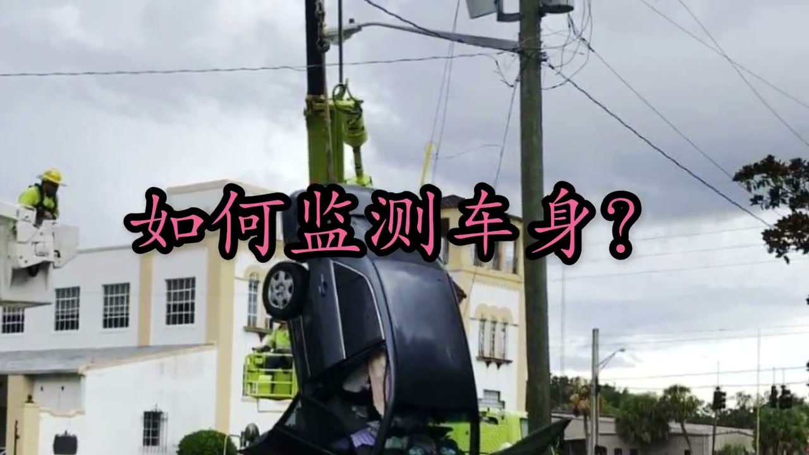
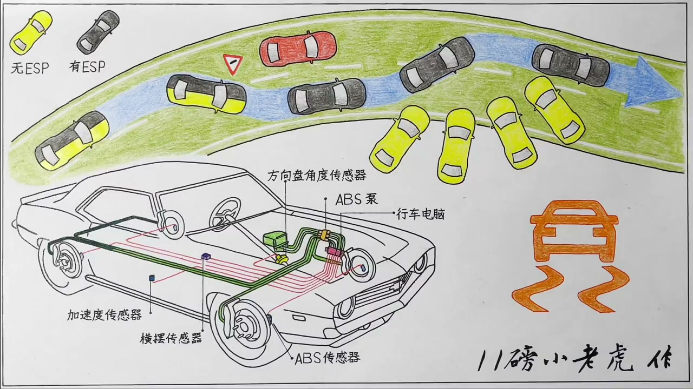
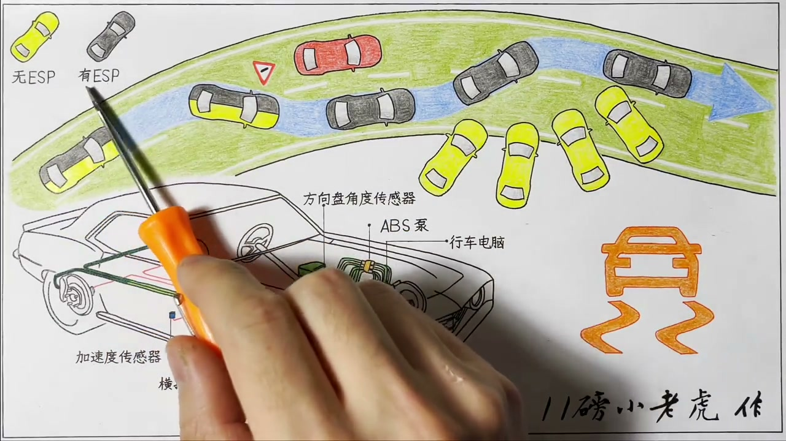
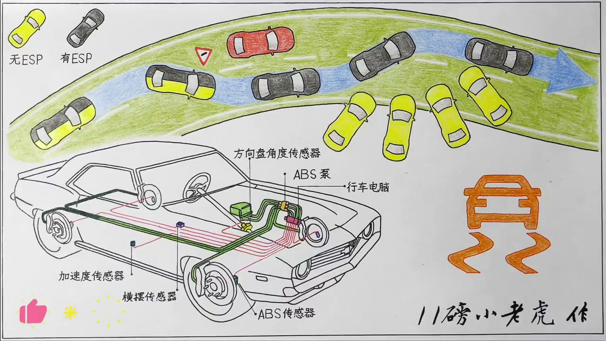

01
中文
ESP是英文Electronic Stability Program的首字母缩写。
EN
ESP stands for Electronic Stability Program.
表达提示stand for（缩写为）

Scene English · 汽车 · ESP
How ESP Electronic Stability Works
🎧 语音讲解
What ESP Is
情境ESP是Electronic Stability Program的缩写，即电子稳定程序；也叫ESC，还有很多厂商各自的叫法，本质都是车身稳定系统。
ESP是英文Electronic Stability Program的首字母缩写。
ESP stands for Electronic Stability Program.
表达提示stand for（缩写为）
直接翻译就是电子稳定程序的意思，也有车叫它ESC。
Literally 'electronic stability program'; some brands call it ESC.
表达提示Electronic Stability Control（电子稳定控制）
本田叫VSA，丰田叫VSC，日产斯巴鲁叫VDC，宝马捷豹路虎叫DSC，本质都是车身稳定系统。
Honda calls it VSA, Toyota VSC, Nissan VDC, BMW DSC—same thing underneath.
表达提示same thing（同一回事）
stand for（缩写为
same thing（同一回事

How It Detects Slip
情境ESP靠几类传感器监测车身：方向盘角度传感器告诉电脑驾驶员想去的方向，横摆传感器测车身摆动，轮速传感器测打滑，加速度传感器确认姿态。
首先要靠传感器监测车身状态：方向盘角度传感器告诉电脑驾驶员想往哪个方向去。
First, sensors read the car: the steering-angle sensor reports the driver's intent.
表达提示steering-angle sensor（方向盘角度传感器）
横摆传感器实时监测车身摆动的幅度，摆动大就说明要失控甚至翻车了。
A yaw sensor tracks the body's rotation; big swings mean imminent loss of control.
表达提示yaw sensor（横摆传感器）
四个轮子上的速度传感器（也就是ABS传感器）检测每个轮子的转速，哪个轮子转得不一样就说明打滑了。
Wheel-speed (ABS) sensors spot a wheel spinning out of sync—that's slip.
表达提示wheel-speed sensor（轮速传感器）
加速度传感器配合横摆传感器，让电脑知道车身是侧翻、前倾还是后仰。
Accelerometers refine whether the body is rolling, diving, or pitching.
表达提示accelerometer（加速度传感器）
yaw sensor（横摆传感器
wheel-speed sensor（轮速传感器

Intervention in an Emergency Swerve
情境高速上突然遇到前车急停，没有ESP会出现转向不足追尾或回打方向转向过度甩出；有ESP时电脑单独给某个轮子刹车修正车身。
高速120公里时前方有车紧急停在超车道，刹车来不及，只能一把方向往右打。
At 120 km/h a car stops ahead; no time to brake, so you yank right.
表达提示yank the wheel（急打方向）
没有ESP很可能出现转向不足：实际转过的幅度小于方向盘打的幅度。
Without ESP comes understeer: the car turns less than you asked.
表达提示understeer（转向不足）
回打方向时车身晃动最厉害，最容易产生转向过度然后彻底失控。
The counter-steer wobble invites oversteer and a full spin.
表达提示oversteer（转向过度）
有ESP时，电脑通过ABS只对右后轮制动，让车绕这个点向右转动，修正转向不足。
With ESP, the computer brakes just the right-rear wheel, yawing the car into the turn.
表达提示brake one wheel（单轮制动）
回打方向时电脑又只对右前轮制动，产生向右摆动的趋势，抵消转向过度。
On counter-steer it brakes the right-front, countering the oversteer.
表达提示counter（抵消）
yank the wheel（急打方向
understeer（转向不足

Everyday Slip and Electronic LSD
情境雨天压水坑、压冰、过砂石路面会抢方向盘，ESP可以刹慢有抓地力的轮子把车身修正回来，还能刹停打滑轮让动力给到有抓地力的轮子，即电子限滑。
雨天高速压过水坑，水把轮胎和路面隔开，压水那一侧的轮子瞬间失去抓地力。
Hit a puddle and the water lifts the tire—that side loses grip instantly.
表达提示lose grip（失去抓地力）
方向盘会向压水那一侧被抢了一下，手没握紧方向盘又没ESP就很容易失控。
The wheel gets yanked toward the water; loose hands and no ESP spell trouble.
表达提示yanked（被抢）
ESP能刹慢有抓地力的轮子，把车身修正回安全方向。
ESP brakes the gripping wheels to steer the body back to safety.
表达提示gripping wheels（有抓地力的轮子）
它还能刹停打滑的空转轮，让动力更有效给到有抓地力的轮子，这就是电子限滑。
It can also brake a spinning wheel, sending power to the gripping one—electronic LSD.
表达提示electronic LSD（电子限滑）
lose grip（失去抓地力
yanked（被抢

When to Turn ESP Off
情境漂移需要驱动轮打滑、方向盘指向与车身运动方向不一致，ESP会干预；陷车需要驱动轮持续打滑冲出来；修车空转判断异响也要关ESP。
有些特殊情况下ESP介入反而帮倒忙，最典型的就是想玩漂移。
In a few cases ESP hinders—most famously drifting.
表达提示hinders（帮倒忙）
漂移的两个特征就是驱动轮打滑和方向盘指向与车身运动方向不一致，开着ESP永远飘不起来。
Drifting needs wheelspin and mismatched wheel angle—ESP blocks it all.
表达提示wheelspin（打滑）
陷在雪坑泥坑里，必须依靠驱动轮一个劲打滑靠惯性冲出来，也需要关闭ESP。
Stuck in snow or mud, you need wheels spinning to rock out—so ESP off.
表达提示rock out（靠惯性冲出来）
修车师傅把车顶到架子上让轮子空转判断异响，也需要关闭ESP，不然电脑会限制发动机输出还踩刹车。
On a lift, spinning wheels make ESP cut power and brake—so turn it off.
表达提示on a lift（顶到架子上）
hinders（帮倒忙
wheelspin（打滑

The Limits and Value of ESP
情境安全驾驶主要靠人，ESP只是辅助；ESP不能提高转弯性能，只能降低失控概率；美国NHTSA数据：同条件下降低撞车概率35%，SUV车型降67%。
安全驾驶最主要的因素还是人，ESP再好也只是辅助，只有在你好好开车的前提下才能帮到你。
The driver comes first; ESP only helps if you drive sensibly.
表达提示sensibly（理智地）
每一次ESP介入仪表盘指示灯都会闪烁，它是在告诉你系统正在保护你。
The ESP light flashes on intervention—it's telling you it's saving you.
表达提示intervention（介入）
车辆的最终极限取决于轮胎的抓地极限，ESP只能在抓地极限内尽量控制车身。
Grip limits the car; ESP can only work within them.
表达提示grip limit（抓地极限）
ESP不属于提高转弯性能的功能，它只能降低车辆失控的概率。
It doesn't boost cornering—it lowers the odds of losing control.
表达提示lower the odds（降低概率）
美国NHTSA公布：同等条件下ESP能降低撞车概率35%，在SUV车型中带ESP的事故比不带少67%。
NHTSA: ESP cuts crash probability 35%, and SUV crashes by 67%.
表达提示NHTSA（美国国家高速安全部门）
sensibly（理智地
intervention（介入
说ESP是什么
说传感器
说紧急介入
说电子限滑
说关ESP时机
说ESP边界
ESP不提高转弯性能。
超出抓地极限谁也救不了。
平时别关ESP。
传感器对比意图与实态。
指示灯闪就是ESP在救你。